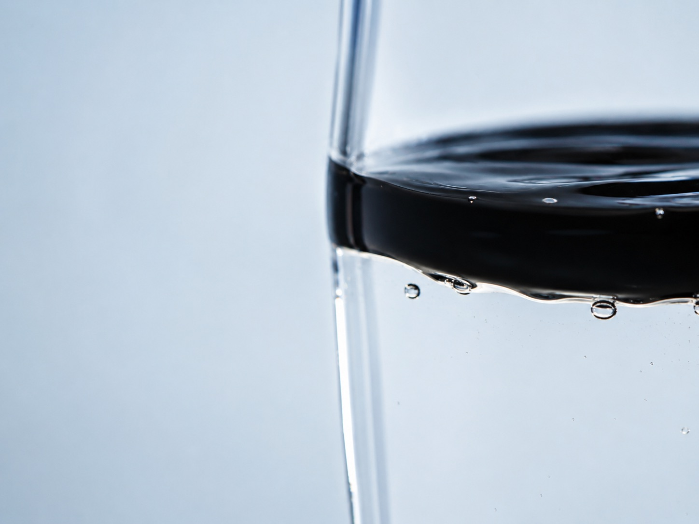
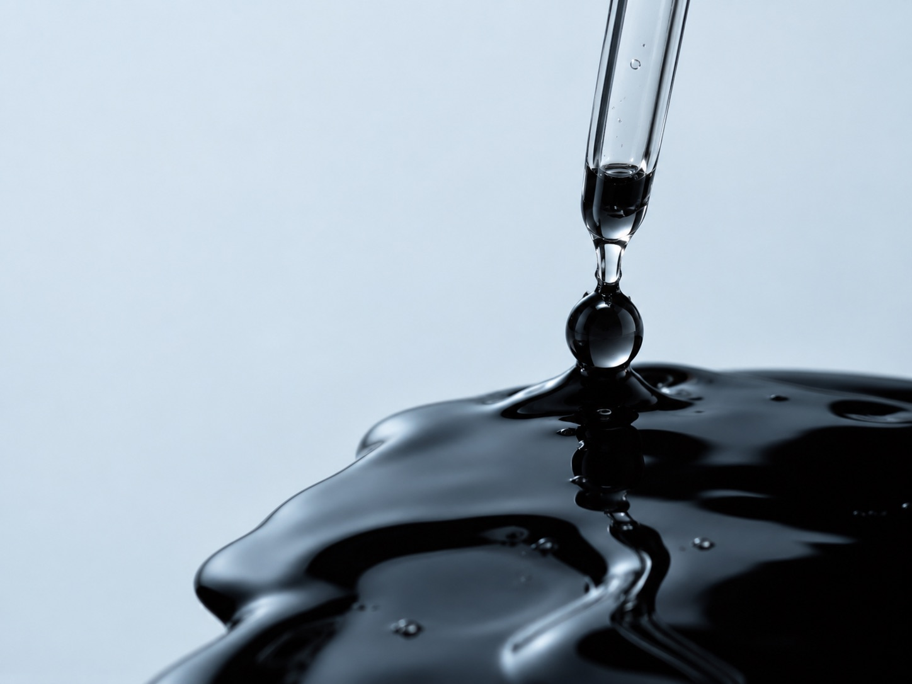

Iniciação Científica · CEFET/RJ
Entendendo o comportamento de petróleos parafínicos.
Um estudo experimental sobre a influência da água e de diferentes inibidores na viscosidade e na deposição de parafina.
Conheça a pesquisa ↓O problema
Durante a produção e o transporte de petróleos parafínicos, a redução da temperatura pode favorecer a formação e deposição de cristais de parafina, alterando o comportamento do óleo e dificultando seu escoamento.
Como a presença de água e diferentes inibidores pode alterar esse comportamento?
A queda de temperatura favorece a formação de cristais de parafina.
A redução da temperatura pode favorecer a cristalização de componentes parafínicos, alterando o comportamento do óleo ao longo do escoamento.
Pequenos cristais.
Grandes impactos no escoamento.
01.
Compreender o comportamento do óleo
Investigar como as condições analisadas influenciam a viscosidade e o comportamento do petróleo parafínico.

02.
Avaliar a influência da fase aquosa
Comparar o comportamento do Óleo A hidratado, contendo aproximadamente 30% de água, com o óleo desidratado.

03.
Investigar alternativas para reduzir a deposição
Avaliar diferentes compostos utilizados como inibidores de parafina e comparar seu comportamento experimental.
Metodologia
Da preparação das amostras à análise dos resultados.
01
Preparação das amostras
Preparação do Óleo A nas condições hidratada e desidratada.
02
Adição dos inibidores
- Éster C14
- Éster C12
- Polímero R1
- Polímero R2
03
Ensaios experimentais
Medição da viscosidade em função da temperatura, utilizando rotor 4 a 6 RPM.
04
Análise
Comparação dos dados obtidos entre as diferentes condições experimentais.
Amostras
Quatro inibidores avaliados.
01.
Éster C14
02.
Éster C12
03.
Polímero R1
04.
Polímero R2
Resultados
O que os experimentos mostram?
Viscosidade em função da temperatura
Eixo X: Temperatura (°C). Eixo Y: Viscosidade (mP).
Leitura: cada curva representa uma amostra do Óleo A, comparando a condição hidratada e desidratada, com e sem inibidores.
Rotor 4, 6 RPM.
Comparação entre condições experimentais
Comparações calculadas apenas em temperaturas comuns entre a amostra de referência e a amostra com aditivo.
Tabela completa de dados experimentaisTodos os valores originais da planilha, sem alterações.
| Amostra | Condição | Aditivo / Inibidor | Temperatura (°C) | Viscosidade (mP) | Rotor | RPM |
|---|
Resultado em destaque
O Éster C12 apresentou efeito de inibição no óleo desidratado.
Equipe
Equipe da pesquisa
Referências
Base científica da pesquisa
Pesquisa conduzida pela professora Denise Gentili.